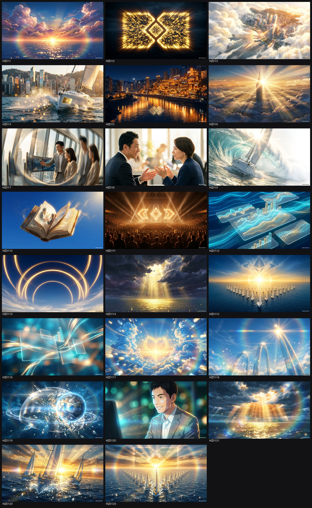
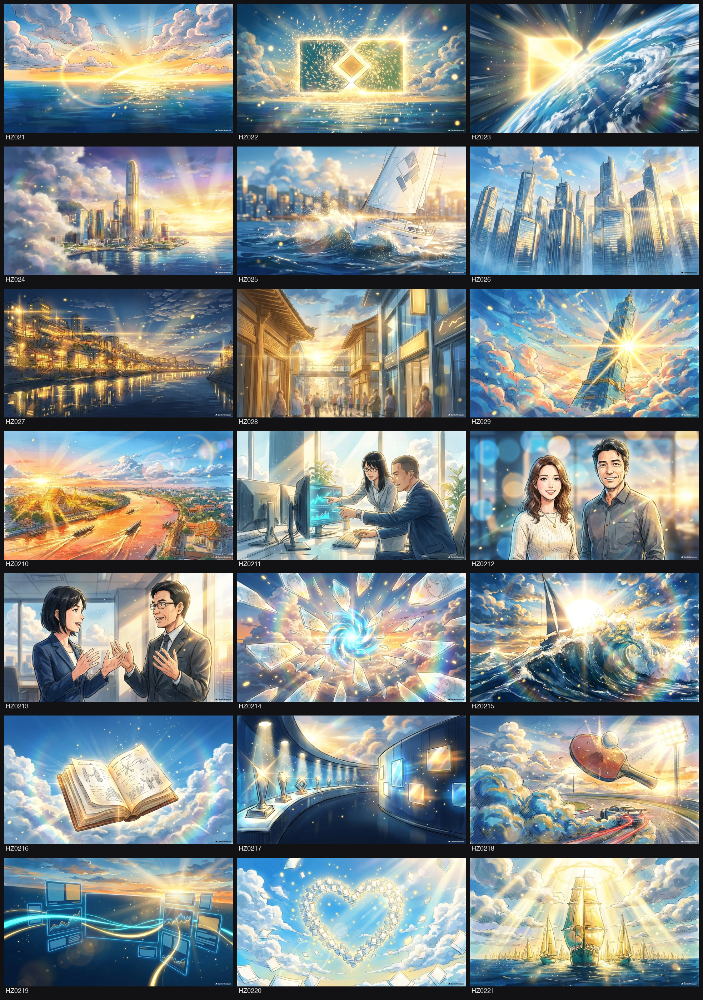
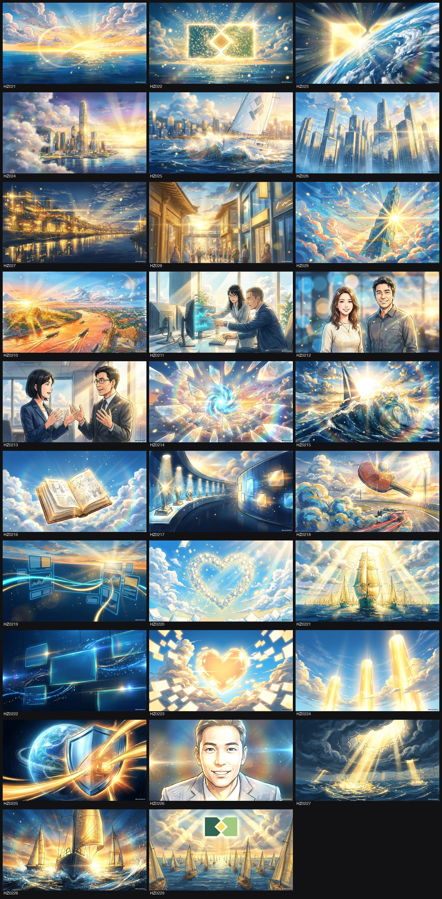
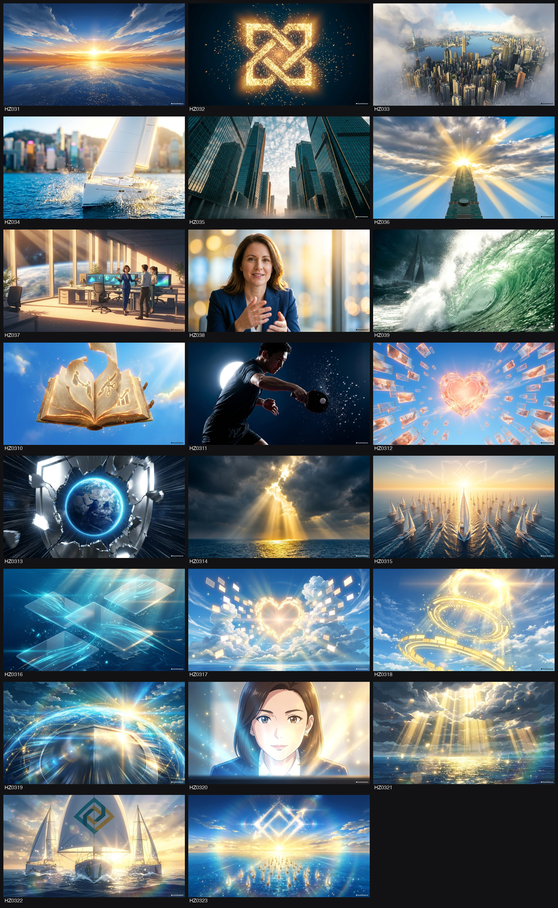
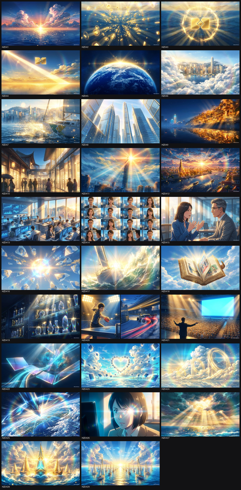
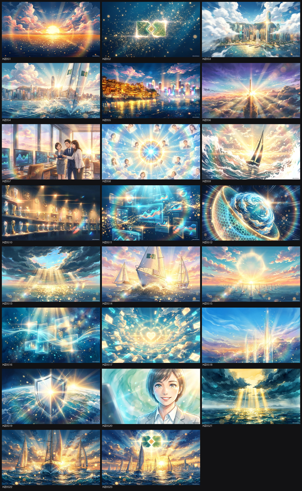
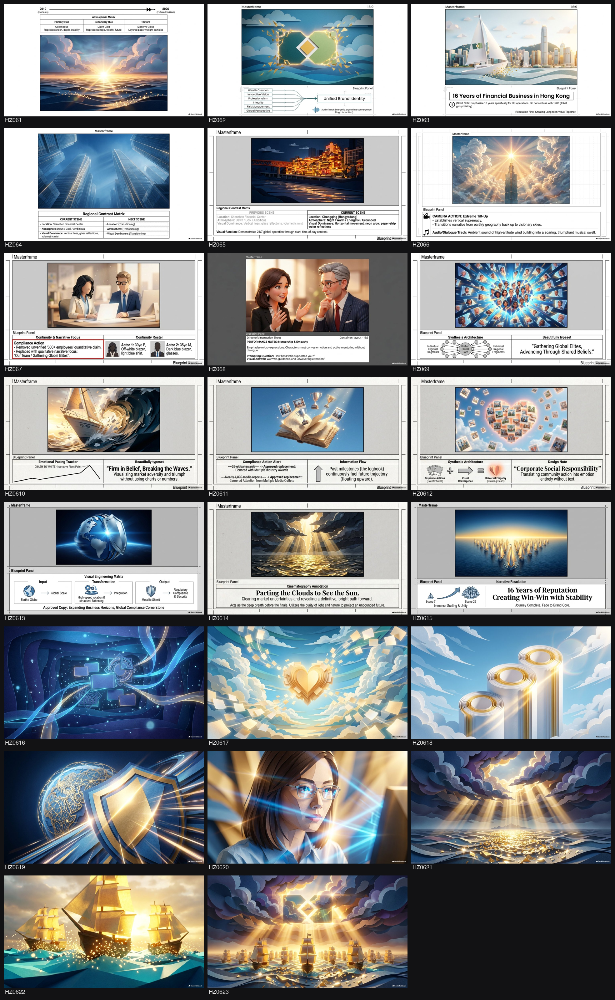
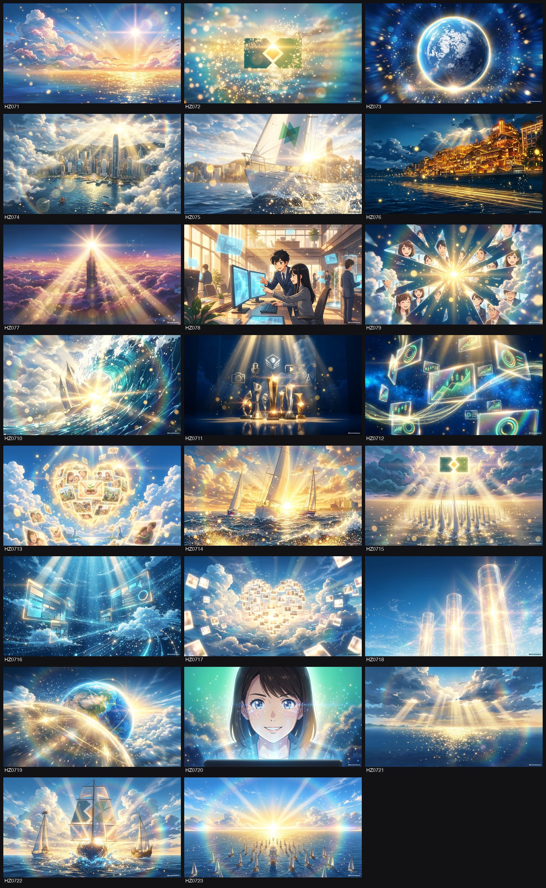
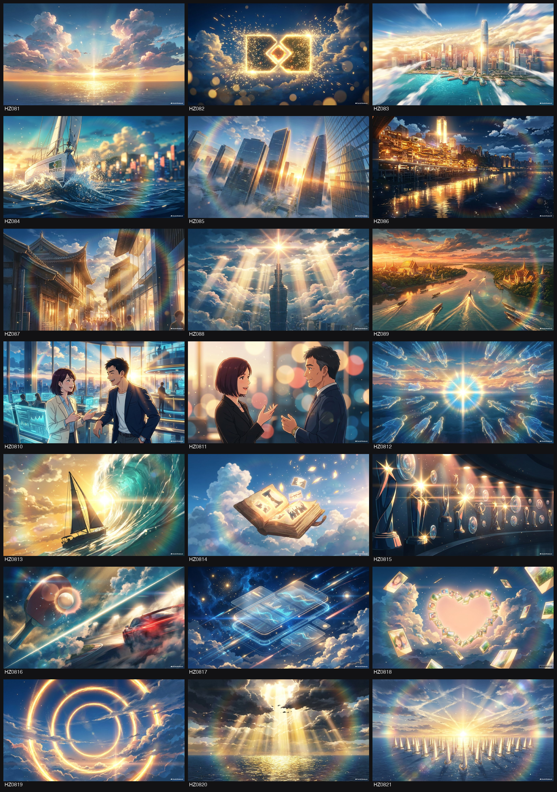

PLOTIO2 · PLOTIO2
🏠委員會／agency 諗橋一定收呢批做底，必跟。
- 除標書表明，人物一般使用華人面孔（東亞／香港華人），唔好生成西方／白人臉
- 衣著連戲：同一角色每一格都著返同一套衫（衫款／顏色／髮型／配件固定），除非故事明寫佢換咗衫
- 全 board 畫風完全一致：同一 render 風格／同一打燈／同一色調／同一線條筆觸，由頭到尾統一，似同一個畫師一次過畫
- Storyboard 盡量唔好出現雨傘；若劇情一定要有雨傘，唔可以係黃色
每塊 BD 用英文字：A 寫實真人 · B Sketch 分鏡草稿 · C 插畫 · D 新海誠風 · E 宮崎駿風 · F Paper-craft 紙藝 · G Kawaii 可愛 · H Anime 動漫 · I 3D Animation。左＝要改邊格、右＝改用邊格（直接抽源頭嗰格落嚟，連畫風）。撳「套用」→ 嗰塊 BD 重砌（舊版留底，幾秒內換）。
每塊 BD 用英文字：A 寫實真人 · B Sketch 分鏡草稿 · C 插畫 · D 新海誠風 · E 宮崎駿風 · F Paper-craft 紙藝 · G Kawaii 可愛 · H Anime 動漫 · I 3D Animation。一格輸入，似揀印頁數：例 A1, B2, C3 或 A1-4, C3, D2（A1-4＝A1,A2,A3,A4，亦可寫 A1-A4；逗號分隔，有冇空格都得）。跨 BD 範圍（如 A1-B4）唔得，會叫你改。撳「砌成新 BD」→ 即砌一塊全新 BD，畀返新英文編號顯示喺下面，原有 BD 唔受影響。
Master GSheet「TV API Script {N}」手寫稿 → 跟你視覺指示 → NLM 生全風格（線稿／插畫／真人…），每格純畫面（唔蓋字）。
⏱ 送出改格 / 重做後，NLM 重生約需 8-10 分鐘；生緊嗰塊會標「🔄 重生緊」，完成自動換新圖（版面每 4 分鐘自動 refresh，或撳右上 🔄）。舊版留喺「↩︎ 睇返舊版」。
喺 Master GSheet 開「TV API Script 1／2／3」三個 tab 放唔同 TV API 稿，撳邊個 SET 就生邊個（全 NLM 風格各一，純畫面唔蓋字）。

↩︎ 睇返舊版 BD

↩︎ 睇返舊版 BD


↩︎ 睇返舊版 BD

↩︎ 睇返舊版 BD

↩︎ 睇返舊版 BD

↩︎ 睇返舊版 BD

↩︎ 睇返舊版 BD

↩︎ 睇返舊版 BD